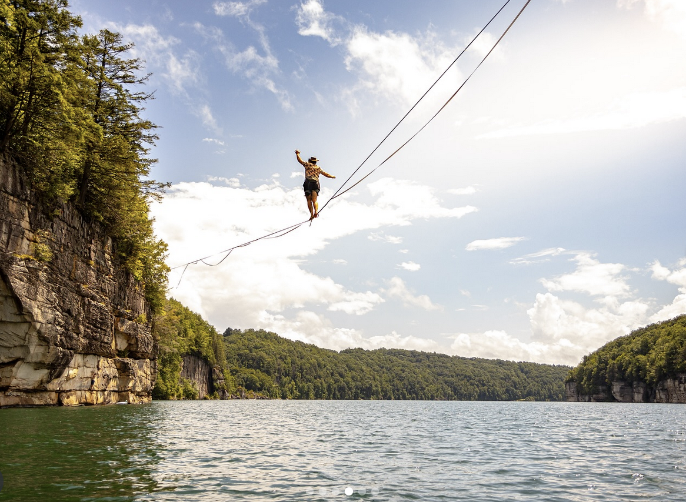
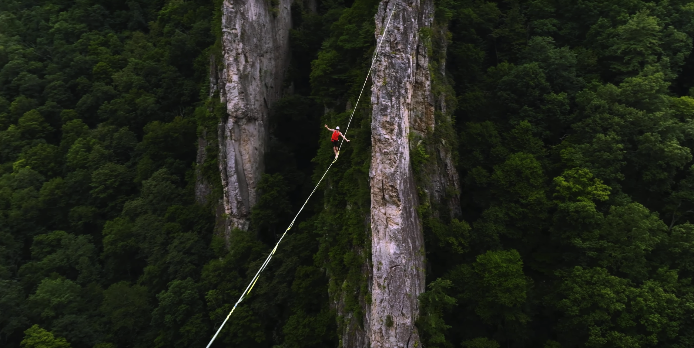

Trips
Smoke Hole Canyon:

Approximately two and half hours aways from grounds is Smoke Hole Canyon, West Virginia, a location where members of the highlining community regularly meet up to rig 50m to 120m+ highlines approximately 200 feet off the ground. The highline span the edges of the cliffs providing beautiful views of the valley below, wonderful sunsets, and lots of exposure. A few members of the club achieved their goals of standing up for the first time at Smoke Hole Canyon. It is an unforgettable trip!
Summersville Lake
The New River Gorge area of West Virginia is widely known for its plethora of world-class rock climbing and whitewater. However, it is less known for its incredible highline potential. Specifically, at Summersville Lake there are many bolts to rig highlines over the water. The lake is one of the most popular places for highlining in the area and offers lots of other fun activities such as cliff jumping, climbing, and boating.
Four Moons Slackline Preserve - Seneca Rocks, WV
Four Moons is a piece of property located right next to Seneca Rocks National Recreation Area in Seneca Rocks West Virginia. Depending on the time of year, there is multitude of permanently rigged highlines setup that people can pay a small fee, or a yearly membership, to come use. It is one of the only places of its kind in the world and allows the activity to be both accessible and time-efficient, as you don't have to spend the time of rigging the lines when you go.
The Likely Future

The club has plans to scout out new locations for setting up midlines and highlines, like Whiteoak Canyon in Shennandoah National Park, so stay on the lookout for trips mentioned in the GroupMe!
Around Grounds
It is nice to not have to drive multiple hours to setup and practice highline. The club will setup midlines, or less high highlines, in the Greater Charlottesville Area, in places such as Observatory Hill Woods, the Rivanna River, and various places around grounds. Communication is handled through the GroupMe. These trips are great opportunities for members of the club to get outside of their comfort zone and get more experience with the sport